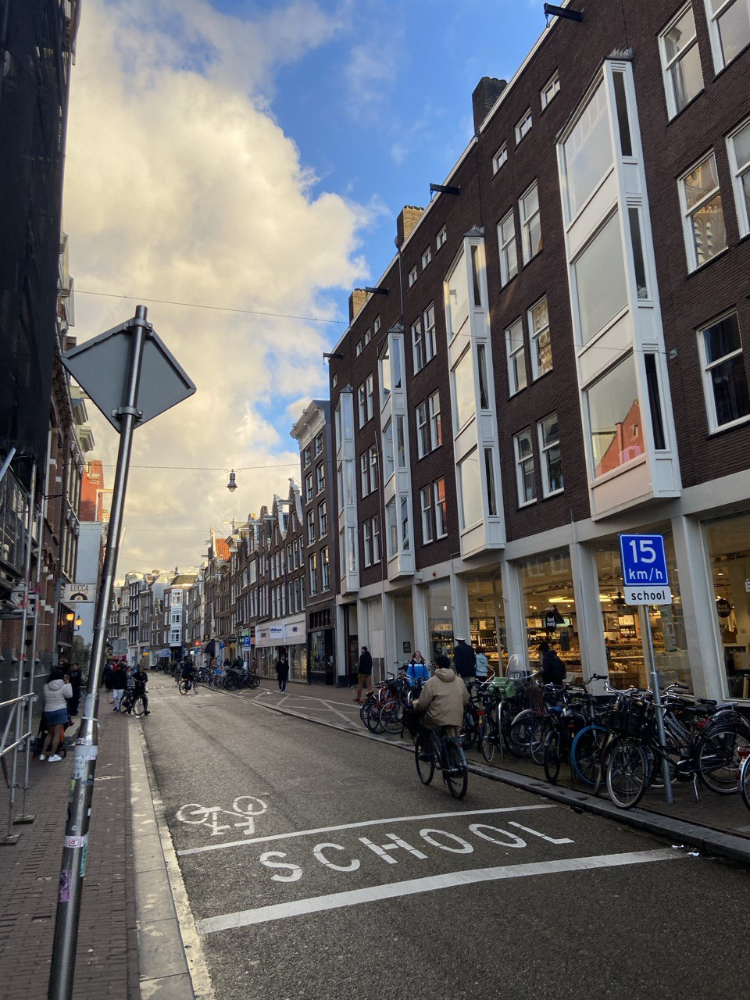

Дата та місце народження: 16.07.2006, Київ.
Освіта: Середня загальноосвітня школа №288 -> Київський фаховий коледж зв'язку -> НТУУ "КПІ ім. Ігоря Сікорського"
Амстерда́м (нід. Amsterdam) — місто, столиця Нідерландів, комерційний та фінансовий центр країни. Розташований у провінції Північна Голландія на Заході країни в гирлі р. Амстел, на берегах вузької затоки Ей та Нордзе-каналу, який сполучає її з Північним морем. Частина міста лежить нижче рівня моря, деякі ділянки — на землях, де раніше були болота, озера або морська затока. Культурний центр світового рівня, у ньому знаходяться безліч культурних та історичних пам'яток, один з найпопулярніших туристичних центрів Європи; система оборонних споруд міста занесена в список об'єктів Світової спадщини ЮНЕСКО.
